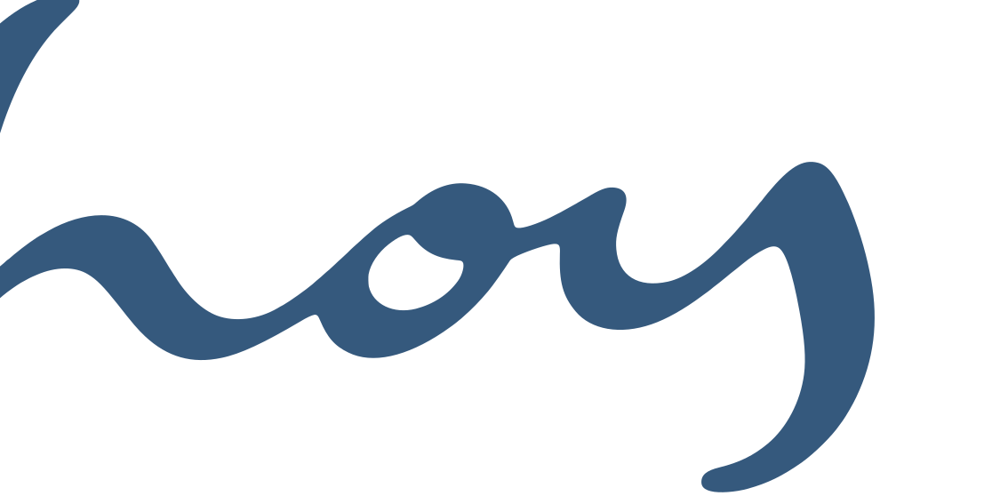
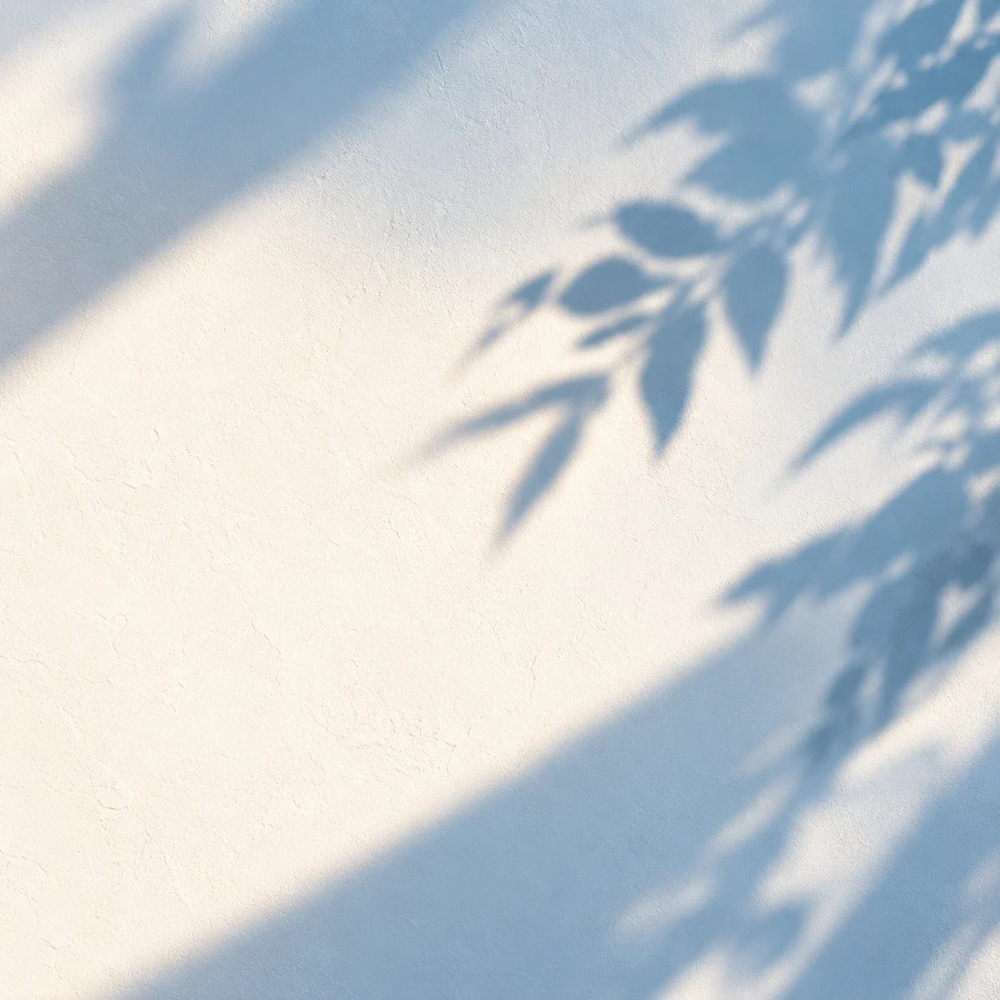
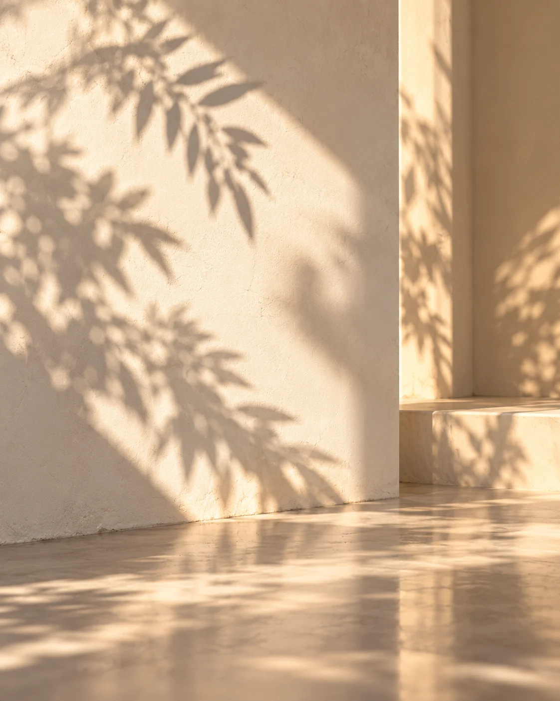
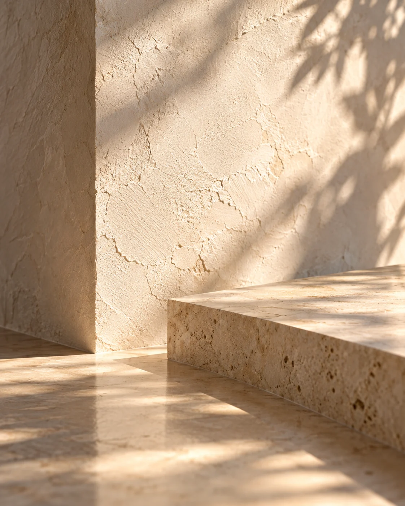

Pulso Materia: plaster, paper, stone and linen for a wellness studio. Tokens, components and brand assets for HoyOS.
Exported from the claude.ai design system: every component preview below is live HTML.
Pill-shaped actions: one ink pill per view for the main action, tactile paper pills for everything else.
Use
- btn-primary — the one main action in a view or card ("Reservar clase", "Confirmar check-in"). color-accent-fill (ink in light, deep blue in dark) with color-text-on-primary and shadow-ink-lift.
- btn-secondary — every other action. Paper (color-surface) with a top highlight, a rgba(ink,.12) hairline and shadow-pill; on hover it lifts to shadow-pill-hover, on press it sinks to shadow-pill-pressed and moves 1 px down.
- btn-outline — exports and filters that sit on the plaster ground; keeps a visible edge.
- btn-tonal — repeated row actions (a 24% tint of color-accent, color-primary text, no shadow).
- btn-ghost — cancel and tertiary links. btn-danger — destructive and irreversible actions only.
What the consumer provides: a short verb label in Spanish and English ({ es, en }), an optional leading icon (lucide, 1.75 stroke), size sm/md/lg, loading, disabled.
Rules
- Height is never under h-ctl (44 px); btn-lg is h-ctl-lg (48 px). Padding is 0 sp-lg (sp-xl for large).
- Label: DM Sans 600, 14 px (16 px large), sentence case, no trailing punctuation.
- Never two primary pills side by side; never a primary pill on a deep-blue hero (use secondary there).
- Disabled is 50% opacity and keeps its shape; loading shows a spinner and keeps the label at 60%.
- Focus: a 2 px color-focus ring offset 2 px.
Small pills for filtering a view and for naming a class type by its tone.
Use
- Filter chips (button.chip) — date ranges, filters and segmented choices in a row. Unselected chips are tactile paper pills (shadow-pill); the selected chip is the ink pill (color-accent-fill, shadow-ink-lift). One selected per group unless the group is multi-select.
- Tone chips (chip-tone) — the class type in rosters, schedules and bookings: a translucent tone ground, the tone's fg ink and a tone-*-dot. In dark mode the ink is the dot mixed 30% toward color-ink so it holds 4.5:1.
What the consumer provides: the label ({ es, en }), selected, and for tone chips the class tone id (river, sun, clay, moss, sage, slate, plum).
Rules
- Interactive chips are at least h-ctl tall; tone chips are labels and can be compact.
- Chips in a tab row stay on one line.
- Tone names are never shown as words — the class name is the label.
A KPI tile: a label, one figure with an optional trend, and a hint, painted in a limewash class tone.
Use
- A KPI row takes the tones in order: river, sun, clay, moss (tone-*-wash), repeating every four tiles.
- The wash is the pigment softened toward the plaster — tone-*-dot at 64% over #F4EDE0 (66% over #B8B0A0 in dark). It carries only the paper grain and a soft top light; no stone mottling.
- All text on a wash is stat-ink (#0e1721): 6.5–11.8:1 in light, ≥ 4.5:1 in dark.
- A tile alone (outside a KPI row) is plain paper with color-ink figures.
What the consumer provides: label, value (preformatted, es-CO number format), optional trend (up / down / flat with its text) and hint.
Rules
- Figure: DM Sans 700, 28 px, -0.03em, tabular numerals. It shrinks to fit (to 50%) and never wraps.
- Label and hint clamp to two lines so tiles in a row keep one height.
- Never use the full-strength tone-*-dot as a tile fill — dots and bars only.
An inline note on linen: a round icon, a title, one line of text and an optional action.
Use
- notice-info — a quiet paper note (color-surface-2 + linen) with a 3 px brand-yellow edge and a color-highlight icon. Use for context the user should notice but need not act on.
- notice-success, notice-warn, notice-danger — a 10–12% tint of the status colour over paper with a solid status icon. Always pair the colour with a word and an icon.
What the consumer provides: tone, title, text, optional action (a secondary or ghost button, right-aligned; below the text under 480 px).
Rules - One info notice per section at most — three yellow notes in a row read as a wall. - Notices sit inside the content flow, never as toasts.
The paper surface that holds every panel, list and form, and the blue-stone hero for the one thing that matters most.
Use
- card — paper (color-surface) with the paper grain and linen weave, r-md corners, shadow-card, padded card-pad (16 px phone, 24 px from 768). Title in card-title, an optional eyebrow above it.
- card-primary — the deep-blue stone hero (brand-deepBlue + travertine mottling + grain): the next class, the hub build tile, a gift card. At most one per screen. Text is color-text-on-primary; eyebrows at 82%.
- Interactive cards lift to shadow-raised and move 2 px up on hover (dur-base, ease-out).
What the consumer provides: a title, optional eyebrow and actions (top right), body content; padding sm/md/lg; raised; interactive.
Rules
- Cells in a grid keep their natural height — never stretch an empty card to "balance" a row; pair it with real content instead.
- Rows inside a card are separated by color-border hairlines, padded sp-md vertically.
- Nested corners follow inner = outer − padding.
#35597d#5f85b1#f7f3b2#f1e7d2#1c2e42#e7dcc6#fbf7ef#ede4d4#fbf7ef#fffcf6#f5eee1#efe7da#e3dbcb#1c2e42#24384f#4c5d70rgba(36,56,79,.72)#35597d#1c2e42#24384f#fbf7ef#5f85b1#f7f3b2#4a4212rgba(36,56,79,.12)rgba(53,89,125,.28)#5f85b1#4f7d5a#8a6a1e#7e3b2c#2c4a6brgba(36,56,79,.35)#5f85b1#d8c24a#c4704f#5a7355#7e9c88#848f9b#9e6e8f#95aac2#e2d180#d59d83#919f87#a8b9a8#acb1b4#bd9cac#0e1721




HoyOS is the operating system of a wellness studio in Medellín: the member app, the front desk, the coordinators' and owners' workspace and the team hub. It is designed the way the studio is built: Pulso Materia — sun-washed limestone plaster, blue plaster, paper, travertine stone and linen, with the warmth of morning light through leaves. The interface should feel like the room, not like software laid on top of it.
Live: the app · team hub · front desk · member home
btn-primary); every other action is a tactile paper pill.tone-*-wash).$1.284.000, 86%, 07:00.brand-deepBlue #35597D is the identity colour — the menu, heroes and the wordmark. brand-cream, brand-yellow (sun, highlights only) and brand-ink complete it.color-bg under the limestone photograph; cards and controls are color-surface paper; color-surface-2 / -3 step down for notes and pressed states.color-ink for headings and figures, color-text for body, color-text-muted for secondary lines, color-text-faint only for eyebrows on paper and ground. All pass WCAG AA in both themes.color-accent-fill — ink in light, deep blue in dark — with color-text-on-primary.tone-*-dot at full pigment for dots, calendar marks and bars; tone-*-wash (pigment 64% over #F4EDE0, 66% over #B8B0A0 in dark) for large tiles, always with stat-ink text. A KPI row runs river → sun → clay → moss.color-success, color-warn, color-danger, color-info — always with a word or icon, never colour alone.editorial) for page titles and greetings: display 41 px / 1.0, regular; title 28 px / 1.15, medium. One display line per screen.body) for everything else: card titles 18 px semibold, body 16 px / 1.5, dense UI 14 px, captions 12 px, eyebrows 11 px semibold uppercase at +0.14em.--ui band (×1.125 at 1920, ×1.375 at 2560, ×1.75 at 3840).| Material | Where | How |
|---|---|---|
| Limestone plaster | Page ground: workspace, hub, member app | Photo under an 84% color-bg veil, fixed to the viewport; leaf-shadow light in the top-right at 18% |
| Blue plaster | Side menu, hub hero | Blue plaster photo multiplied into brand-deepBlue |
| Paper | Cards, tables, panels, controls | color-surface + fine paper grain + linen weave |
| Stone | The one blue hero per screen | brand-deepBlue + travertine mottling + grain |
| Linen | Notes, drawers | color-surface-2 + a two-way hairline weave |
Materials sit behind content, never on top of text, and keep every ground within a few percent of its flat colour so contrast is unchanged. Dark mode replaces the photographs with procedural stone.
shadow-card); drawers and hovered cards lift (shadow-raised).shadow-pill; hover deepens to shadow-pill-hover; press sinks to shadow-pill-pressed and moves 1 px. Primary pills and selected chips use shadow-ink-lift.r-md (24 px) for cards and tiles, r-lg (32 px) for heroes and drawers, r-ctl for inputs, r-full for every button and chip.sp-*, in rem). Read it as a sentence: controls sp-md apart, cards pad sp-lg → sp-xl from 768 px, blocks sp-xl apart, sections sp-3xl → sp-4xl.h-ctl (44 px) tall.dur-fast (120 ms); cards lift in dur-base (200 ms) on ease-out.dur-reveal, staggered). Nothing loops except ambient light.prefers-reduced-motion and prefers-reduced-transparency.color-focus ring offset 2 px on every interactive element.Lucide outline icons through one Icon atom: sizes icon-xs → icon-xl (14–32 px), stroke 1.75 at rest and 2.25 for the active menu or dock item. No emoji, no filled icon sets.
The HOY script wordmark (assets/Logos) in deep blue on light grounds, cream or yellow on deep blue. Clear space equals ⅓ of the script height; minimum 120 px wide.